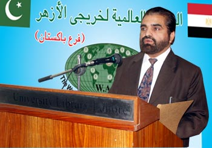
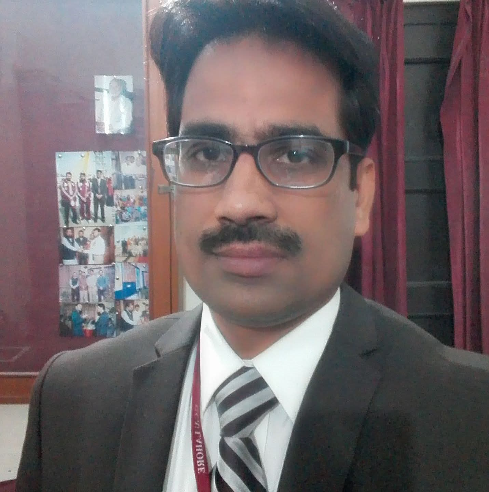
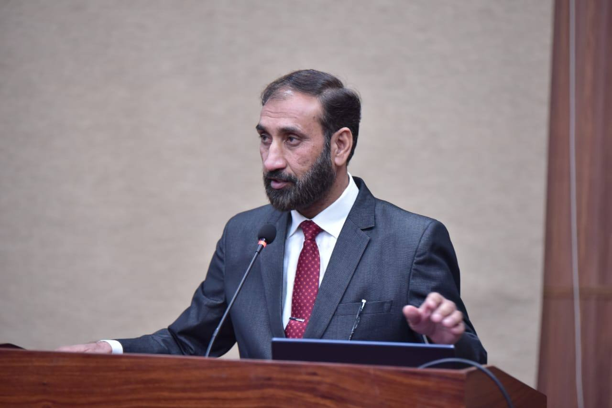

Prof. Dr. Ali Akbar Al-Azhari
Chairperson, Department of Islamic Studies
Superior University, LahoreAl-Qamar Islamic Research Institute (AQIRI), Lahore, invites research students and early-career researchers to an online training workshop on Research Methods in Islamic Studies. Experienced scholars will guide participants through the stages of research, from selecting a topic and writing a proposal to developing a thesis and preparing an article for journal submission.

Chairperson, Department of Islamic Studies
Superior University, Lahore
Chairperson, Department of Arabic and Islamic Studies
Government College University, Lahore
Chairperson, Department of Islamic Studies
University of Education, LahoreBy the end of the workshop, participants will be able to:
Select a topic by identifying a gap in earlier studies and framing a question they can answer with the available sources.
Draft a proposal that explains why the question matters, how it builds on earlier research, and which methods suit it.
Plan a thesis by organising chapters around a central argument and identifying the evidence each chapter needs.
Prepare a journal article by developing one finding into a focused argument and revising the manuscript to meet the journal’s citation and submission requirements.
The workshop aims to help participants turn a broad interest in Islamic Studies into a manageable MPhil or PhD project. They will learn to frame a question that matters, identify sources that can answer it, choose a suitable method, and build an argument grounded in evidence.
This workshop is for MPhil and PhD scholars, other research students, early-career researchers, and university faculty in Islamic Studies. It will be especially useful if you are shaping a research proposal, writing your thesis, or preparing an article for journal submission.
Have a question about the workshop? Our Events Office can help with registration, session timings, and joining instructions.
events@aqiri.orgFor other enquiries or assistance from the Institute, please contact our Administrative Office.
info@aqiri.org